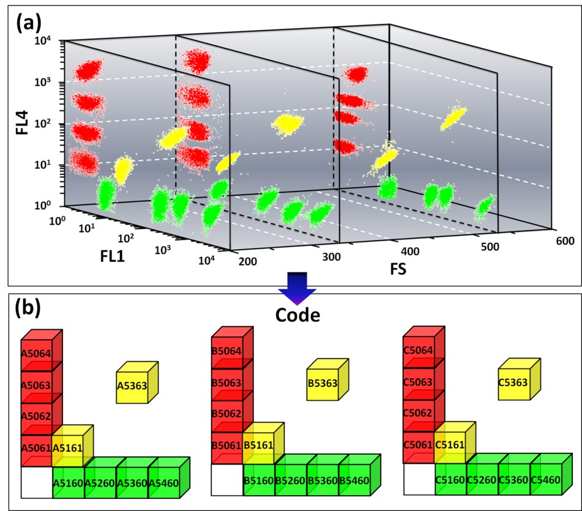

Quantum Dots Encoded Microspheres for Suspension Arrays
Introduction
This is the longest project I have ever done (over 2 years), and I learned the biomedical application of quantum dots.
Instructor: Wanwan Li
Investigator: Yuankui Leng, Yulian Yao, Mengyu Gao
Project Description
Monodisperse polymeric microspheres have diverse applications in biomedical fields due to their excellent properties such as large specific surface areas, strong absorbability and ability to be modified by various functional groups. Quantum dots (QDs), which possess unique optical properties and outstanding photochemical stability, have been regarded as one of the most promising biolabeling materials. The QD-polymer composite microspheres received a great deal of attention, since they could combine advantages of both materials. In this dissertation, SPG membrane emulsification method was introduced into the fabrication of fluorescent microspheres, and Poly(styrene-co-maleic anhydride) (PSMA) microspheres encapsulated with quantum dots were successfully prepared. Our research foucus on the fabrication and surface modification of microspheres to enhance detection sensitivity.
Fabrication
In this project, we used SPG membrane emulsification method to fabricate microspheres narrow particle size distribution.

Fig.1. SEM images of the PSMA microspheres prepared by SPG membranes with different pore sizes.
Average pore sizes of SPG membrane:(a) 1 μm; (b) 3 μm; (c) 4.9 μm
Application
We prepared over 30 batches of polymer microspheres(magnetic and non-magnetic) with near-infrared emitting quantum dots of different emission peaks(650nm—780nm), and conjugated antigen/antibody for detection.

Fig.2. Three-dimensional coding library constructed by Flow Cytometry(each clsuter stands for microspheres with specific-concenrationed, specific-emission-spectrumed quantum dots and specific size
Post-processing
In order enhance detection sensitivity of fluorescent reporter molecules, we grew a shell of gold nanoparticles on the surface of microspheres.

Fig.3. SEM image of gold nanoparticles-shelled microspheres

Fig.4. SEM image of gold nanoparticles-shelled microspheres